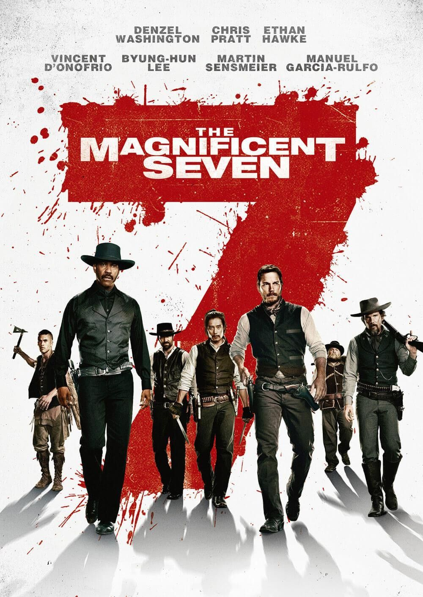
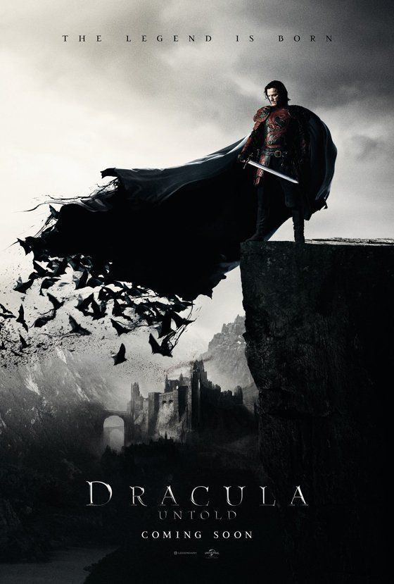
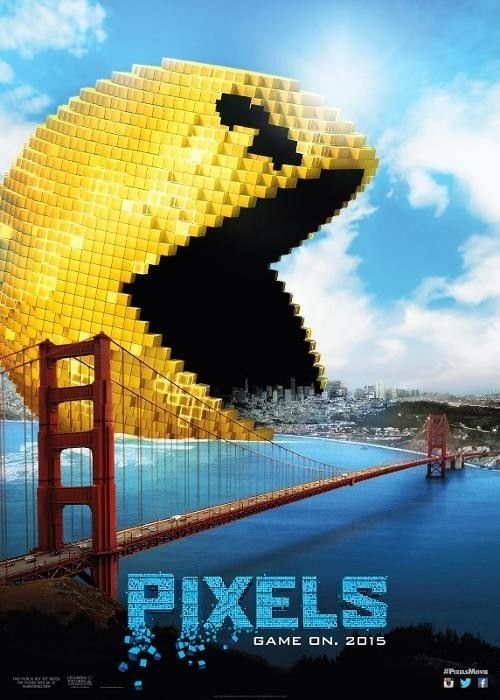

El Precio del Mañana
Esta pelicula que voy a colocar aqui, fue una vez que vi que mi papa estaba viendo una pelicula y a mi se me hizo interesante la pelicula, a mi perspectiva, yo tenia que como unos 12 años, y me acuerdo que esa pelicula se trataba de que todo lo que pagaban, era con tiempo, en ves de dinero, usaban tiempo y si ese tiempo se les agotaba, se morian al instante, claro que aqui tambien las clases sociales estaban divididas porque los pobres, vivian con minutos y claro los ricos tenian decadas, pero ahora que llego ah volver a ver la pelicula,siento que esa pelicula es una similitud con la vida real, esta muy buena esa pelicula la verdad

Peliculas que puedo volver a ver
Sera que si una pelicula me gusta, puedo repertila una y otra y otra asi y nunca me puedo aburrir, yo creo que hasta la veo con la misma emocion que cuando la vi la primera vez
- Los Siete Magnificos 
- Dracula 
- Pixels 
- X-Men
- El Conjuro
- El Mono
- La Morge
- La Noche del Demonio
- La Monja 2
- El Conjuro
- Basada en hechos reales. Narra los encuentros sobrenaturales que vivió la familia Perron en su casa de Rhode Island a principios de los 70. Ed y Lorraine Warren, investigadores de renombre en el mundo de los fenómenos paranormales, acuden a la llamada de una familia aterrorizada por la presencia en su granja de un ser maligno.
- La Morge
- Una bella joven llega a la morgue sin nombre. Los dos forenses, padre e hijo, deciden llamarla Jane Doe. Después de la autopsia, los dos patólogos no encuentran ninguna razón aparente de su muerte. Los dos intentarán desvelar los intrigantes motivos del fallecimiento de la joven, pero de repente empiezan a pasar cosas extrañas.
- El Mono
- Cuando los gemelos Hal y Bill descubren el antiguo mono de juguete de su padre, comienzan a producirse truculentas muertes a su alrededor. Años después, cuando las muertes vuelven a ocurrir, los hermanos deben reunirse para destruir el mono.

Historio de la Pelicula (Dracula)
Un sultán se lleva a un niño para criarlo como soldado, que se convierte en el temible y monstruoso Vlad el Empalador. Años después, Vlad (Luke Evans) vive en paz con su esposa (Sarah Gadon) y su hijo pequeño. El sultán actual (Dominic Cooper) ha mantenido la paz, pero de repente decide volver a coleccionar muchachos para entrenarlos como soldados. Desesperado por tener poder para detener esta locura, Vlad hace un trato con una criatura mortal de una cueva, para obtener poder vampírico; si no sucumbe a su sed de sangre durante tres días, volverá a ser humano. Si lo hace, seguirá siendo un vampiro para siempre - y también liberará a la criatura atrapada de su prisión.